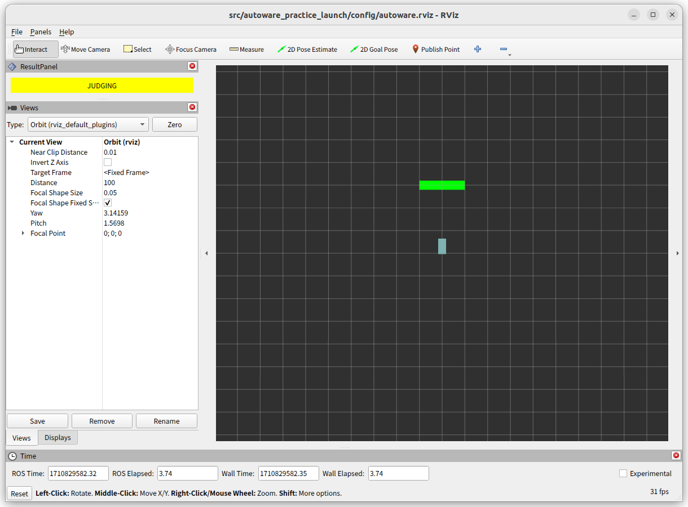

01. 車両インターフェース
01-01. 車両の直進
下記のコマンドを実行し、シミュレーターを起動してください。起動が完了すると、図のように Rviz に車両と緑色のエリアが表示されます。 この緑色のエリアに車両が入れば課題達成となるため、まずは車両を直進させるノードを作成していきます。
ros2 launch autoware_practice_launch practice.launch.xml problem:=vehicle_forward

車両を動かすためのインターフェースとして /control/command/control_cmd が定義されています。
これは AckermannControlCommand というメッセージで、各フィールドは以下のような意味を持っています。
| Field Name | Type | Description |
|---|---|---|
| stamp | time | コマンドの送信時刻 |
| longitudinal.speed | float | 車両の目標速度 |
| longitudinal.acceleration | float | 車両の目標加速度 |
| longitudinal.jerk | float | 車両の目標加加速度 (ジャーク) |
| lateral.steering_tire_angle | float | ステアリングの目標角度 |
| lateral.steering_tire_rotation_rate | float | ステアリングの回転速度 |
以下にコマンドを送信するノードのサンプルを用意しました。サンプルでは停止保持するコマンドを送信し続けるようになっているので、データを変更して車両が発進するようにします。
- command.longitudinal.speed = 0.0;
- command.longitudinal.acceleration = -2.5;
+ command.longitudinal.speed = 3.0;
+ command.longitudinal.acceleration = 1.0;
コードを書き換えたらビルドして実行します。新しい端末を起動して以下のコマンドを実行してください。 上手く出来ていればシミュレーターの車両が動き、条件を満たして結果が SUCCESS になります。
colcon build --symlink-install --packages-select autoware_practice_course
ros2 run autoware_practice_course vehicle_forward
01-02. 車両の旋回
先程と同様に下記のコマンドを実行し、シミュレーターを起動してください。緑色のエリアに車両が入れば課題達成となるため、車両を旋回させるノードを作成していきます。
ros2 launch autoware_practice_launch practice.launch.xml problem:=vehicle_turning
先程利用したサンプルのデータを変更して、車両が旋回するようにします。
- command.lateral.steering_tire_angle = 0.0;
+ command.lateral.steering_tire_angle = 2.0;
コードを書き換えたらビルドして実行します。新しい端末を起動して以下のコマンドを実行してください。 上手く出来ていればシミュレーターの車両が動き、条件を満たして結果が SUCCESS になります。
colcon build --symlink-install --packages-select autoware_practice_course
ros2 run autoware_practice_course vehicle_forward
01-03. 車両の後退
下記のコマンドを実行し、シミュレーターを起動してください。この緑色のエリアに車両が入れば課題達成となるため、まずは車両を後退させるノードを作成していきます。
ros2 launch autoware_practice_launch practice.launch.xml problem:=vehicle_backward

以下に後退するためのコマンドを送信するノードのサンプルを用意しました。直進するためのコードと異なり、ギアを制御するコードが含まれています。サンプルでは停止保持するコマンドを送信し続けるようになっているので、データを変更して車両が後退するようにします。 ギアがREVERSEのときは、目標加速度を正、目標速度を負にします。
- command.longitudinal.speed = 0.0;
- command.longitudinal.acceleration = -2.5;
+ command.longitudinal.speed = -3.0;
+ command.longitudinal.acceleration = 1.0;
コードを書き換えたらビルドして実行します。新しい端末を起動して以下のコマンドを実行してください。 上手く出来ていればシミュレーターの車両が動き、条件を満たして結果が SUCCESS になります。
colcon build --symlink-install --packages-select autoware_practice_course
ros2 run autoware_practice_course vehicle_backward